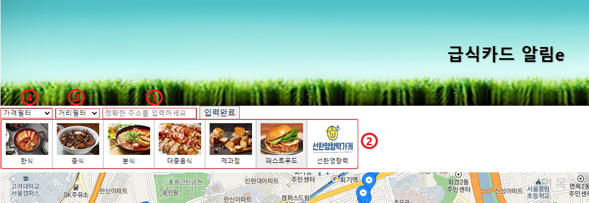

급식카드 알림e 사이트를 이용해보세요!
서울 동대문구내 꿈나무 카드 가맹점들을 조회해보세요.
사이트의 다양한 기능들을 통해 내 집 근처의 가맹점들을 볼 수 있습니다.
기능 이용해보기
오른쪽 위의 '지도 바로가기'를 통해 조회 서비스를 이용할 수 있습니다.
조회 사이트의 왼쪽 상단의 각종 기능을 이용해보세요.
1. 먼저 본인의 정확한 지번주소를 입력해주세요.
( 서울 동대문구 시립대로 163 -> x, 서울특별시 동대문구 서울시립대로 163 -> O )
2. 음식점의 업종별 분류입니다. 마음대로 골라보세요!
3. 1번에서 입력받은 집주소를 바탕으로, 집 근처 음식점을 알아보세요!
(단, 1번에서 주소를 입력해놓지 않았다면 거리필터 기능을 이용하실 수 없습니다)
4. 6천원으로 먹을만 한게 뭐가 있을까? 가격별로 음식점을 알아봐요!
| 업종 분류 | 가격-거리별 분류 | 음식점 상세보기 |
|---|---|---|
|
|
|